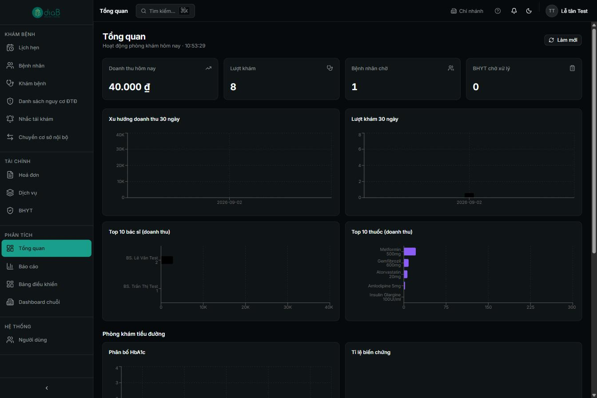
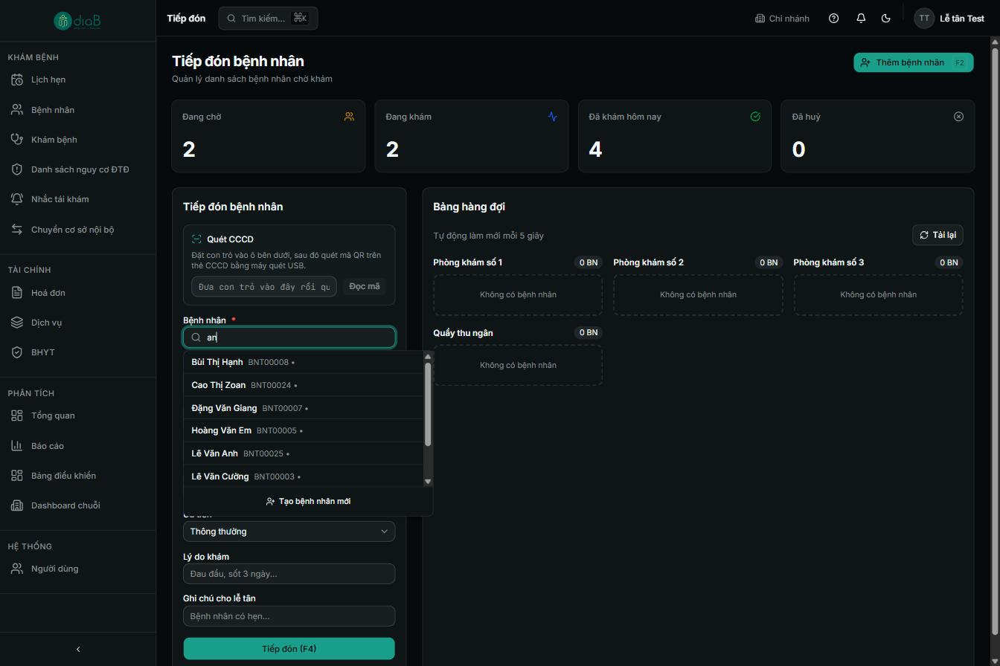
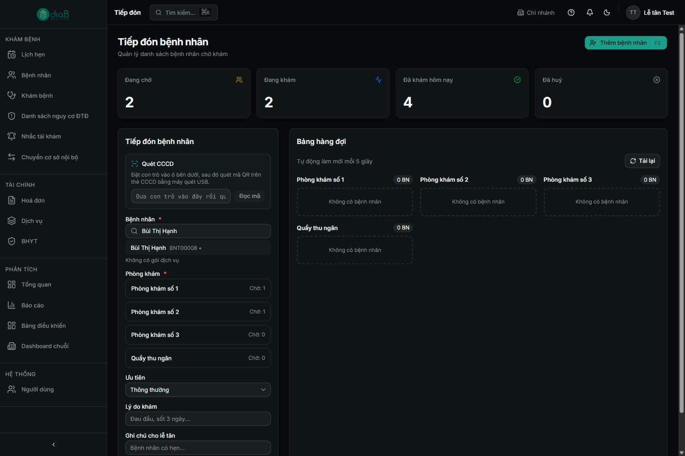
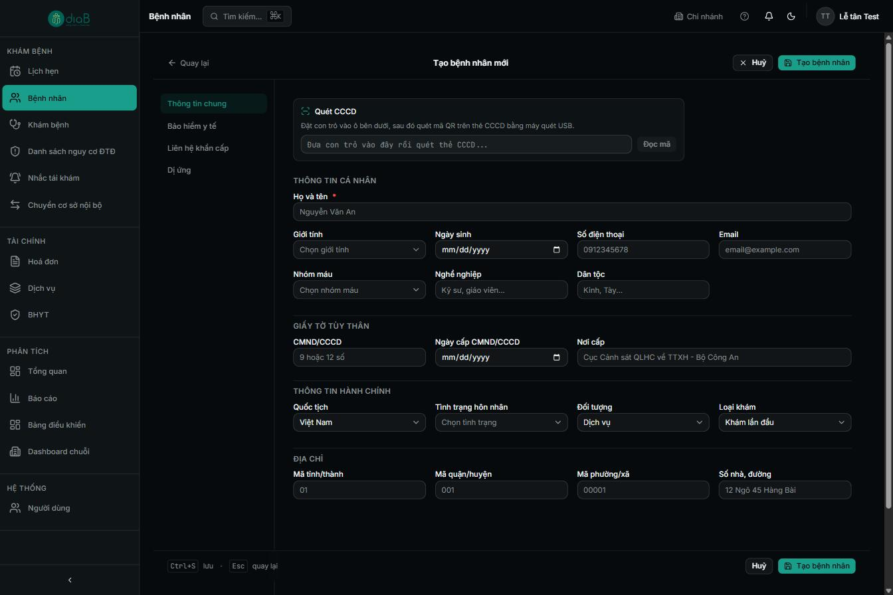
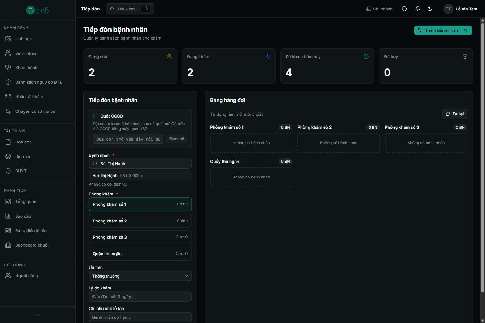
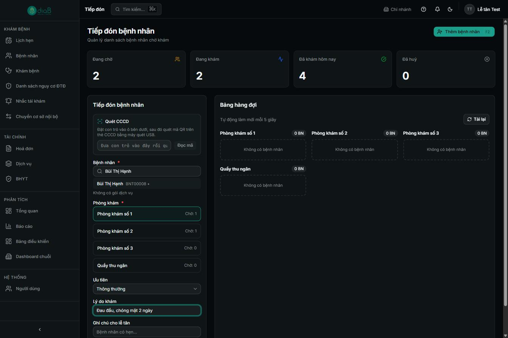
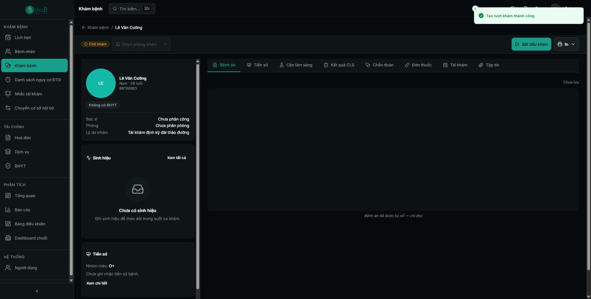
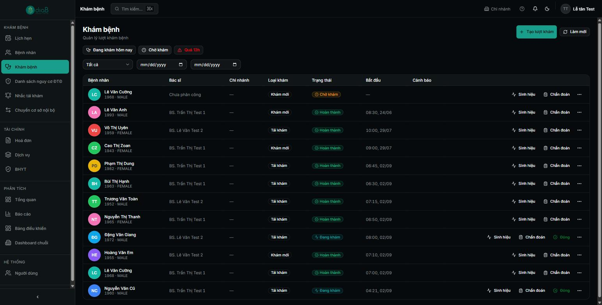

Hướng dẫn đầy đủ công việc lễ tân dùng hằng ngày: đón bệnh nhân, quét CCCD, tạo hồ sơ, xếp phòng và cấp số thứ tự chờ khám.
Tổng quan luồng tiếp đón
Màn hình Tiếp đón là nơi lễ tân đón bệnh nhân đến khám: tra cứu hồ sơ có sẵn (hoặc tạo mới), quét thẻ CCCD, chọn phòng khám và cấp số thứ tự chờ khám. Sau khi tiếp đón, bệnh nhân được xếp vào hàng đợi của phòng khám tương ứng và bác sĩ sẽ gọi vào theo số thứ tự.
Sơ đồ luồng rút gọn
Mở màn hình Tiếp đón.
Tìm bệnh nhân (tên / SĐT / CMND / BHYT) hoặc quét CCCD hoặc tạo hồ sơ mới.
Chọn phòng khám sẽ khám.
Chọn mức ưu tiên và nhập lý do khám.
Nhấn Tiếp đón (F4) → hệ thống cấp số thứ tự và đưa vào hàng đợi.
Theo dõi Bảng hàng đợi (tự động làm mới mỗi 5 giây).
Vai trò tham gia
Vai trò
Tham gia bước nào
Quyền cần có
Lễ tân
Toàn bộ luồng tiếp đón, cấp số, quản lý hàng đợi
Đăng nhập vai trò Lễ tân
Bác sĩ
Nhận bệnh nhân từ hàng đợi (bấm “Đưa vào khám”)
Đăng nhập vai trò Bác sĩ
Điều kiện tiên quyết
Đã đăng nhập bằng tài khoản Lễ tân.
Đã chọn đúng chi nhánh đang làm việc (hiển thị trên thanh trên cùng).
Bệnh nhân đã có hồ sơ, hoặc bạn sẽ tạo hồ sơ mới ngay trong luồng này.
1Mở màn hình Tiếp đón
Vào menu Tiếp đón ở thanh bên trái. Màn hình hiển thị 4 ô thống kê nhanh trong ngày: Đang chờ, Đang khám, Đã khám hôm nay, Đã huỷ.

📷 images/le-tan/01-man-hinh-tiep-don.png — Màn hình Tiếp đón: nút “Thêm bệnh nhân (F2)” góc phải trên và 4 ô thống kê Đang chờ / Đang khám / Đã khám hôm nay / Đã huỷ.
Màn hình Tiếp đón — thống kê nhanh
① Nút Thêm bệnh nhân (F2) góc phải trên — dùng khi bệnh nhân chưa có hồ sơ.
② Bốn ô thống kê cập nhật theo thời gian thực.
💡 Mẹo: Lần đầu vào màn hình, hệ thống hiển thị hộp “Hướng dẫn màn hình Tiếp đón”. Bạn có thể bấm Tiếp → để xem hoặc dấu × để đóng.
2Tìm bệnh nhân đã có hồ sơ
Cuộn xuống khối Tiếp đón bệnh nhân. Đặt con trỏ vào ô Bệnh nhân và gõ tên, số điện thoại, CMND/CCCD hoặc số thẻ BHYT. Hệ thống hiển thị danh sách gợi ý; bấm chọn đúng bệnh nhân.

📷 images/le-tan/02-tim-benh-nhan.png — Ô “Bệnh nhân” đang gõ từ khoá và danh sách gợi ý hiện tên kèm mã bệnh nhân (BN00002).
Tìm bệnh nhân
① Ô Bệnh nhân — gõ từ khoá (ví dụ “Nguyễn”).
② Kết quả gợi ý hiện tên và mã bệnh nhân (VD: Nguyễn Thị Lan — BN00002). Bấm để chọn.
Sau khi chọn, hệ thống hiển thị tên kèm mã và thông tin gói dịch vụ (nếu có). Nếu bệnh nhân không mua gói, dòng ghi “Không có gói dịch vụ”.

📷 images/le-tan/03-da-chon-benh-nhan.png — Bệnh nhân đã chọn (Nguyễn Thị Lan — BN00002) với dòng “Không có gói dịch vụ”.
Đã chọn bệnh nhân
① Bệnh nhân đã chọn: Nguyễn Thị Lan — BN00002.
② Dòng trạng thái gói dịch vụ: Không có gói dịch vụ.
⚠️ Nhánh rẽ — Quét CCCD: Thay vì gõ tay, đặt con trỏ vào ô “Quét CCCD” rồi dùng máy quét USB quét mã QR trên thẻ căn cước. Hệ thống tự đọc thông tin và tìm/điền hồ sơ. Dùng cách này khi có máy quét để nhập nhanh và chính xác.
3Tạo bệnh nhân mới Nhánh rẽ
Nếu tìm không ra, bấm Thêm bệnh nhân (F2) ở góc phải trên, hoặc Tạo bệnh nhân mới ngay trong ô kết quả tìm kiếm. Màn hình mở ra với các thẻ: Thông tin chung, Bảo hiểm y tế, Liên hệ khẩn cấp, Dị ứng.

📷 images/le-tan/04-tao-benh-nhan-moi.png — Form “Tạo bệnh nhân mới”: ô Quét CCCD, nhóm Thông tin cá nhân (Họ và tên, Giới tính, Ngày sinh) và nút “Tạo bệnh nhân”.
Tạo bệnh nhân mới
① Ô Quét CCCD — quét thẻ để tự điền thông tin cá nhân.
② Nhóm Thông tin cá nhân: Họ và tên (bắt buộc), Giới tính, Ngày sinh…
③ Nút Tạo bệnh nhân ở góc phải trên để lưu.
💡 Sau khi tạo xong, hệ thống tự quay lại màn hình Tiếp đón và điền sẵn bệnh nhân vừa tạo — bạn tiếp tục từ Bước 4.
4Chọn phòng khám
Trong danh sách Phòng khám, bấm chọn phòng sẽ tiếp nhận bệnh nhân. Mỗi phòng hiển thị số bệnh nhân đang chờ (“Chờ: n”) để bạn cân đối, tránh dồn quá tải một phòng.

📷 images/le-tan/05-chon-phong-kham.png — Các lựa chọn Phòng khám số 1/2, Quầy thu ngân, Phòng xét nghiệm; phòng được chọn có viền xanh; mỗi phòng hiển thị “Chờ: 0”.
Chọn phòng khám
① Các lựa chọn: Phòng khám số 1, số 2, Quầy thu ngân, Phòng xét nghiệm.
② Phòng được chọn có viền xanh nổi bật.
③ Số Chờ: n bên phải cho biết hàng đợi hiện tại.
5Chọn ưu tiên & nhập lý do khám
Ưu tiên: mặc định Thông thường. Chuyển sang mức ưu tiên cao cho người già, trẻ nhỏ, cấp cứu… (ca ưu tiên được gọi trước trong hàng đợi).
Lý do khám: nhập triệu chứng/lý do (VD: “Tái khám đái tháo đường, mệt mỏi”).
Ghi chú cho lễ tân: ghi chú nội bộ, không bắt buộc.

📷 images/le-tan/06-uu-tien-ly-do.png — Trường Ưu tiên (Thông thường), Lý do khám (đã nhập), Ghi chú cho lễ tân và nút xanh “Tiếp đón (F4)”.
Ưu tiên & lý do khám
①Ưu tiên — mặc định Thông thường.
②Lý do khám — nhập triệu chứng/lý do đến khám.
③Ghi chú cho lễ tân — ghi chú nội bộ, tuỳ chọn.
④ Nút Tiếp đón (F4) màu xanh để hoàn tất.
6Hoàn tất tiếp đón & lấy số
Bấm Tiếp đón (F4). Hệ thống lưu lại, hiển thị thông báo “Tiếp đón thành công” và đẩy bệnh nhân vào hàng đợi kèm số thứ tự.

📷 images/le-tan/07-tiep-don-thanh-cong.png — Thông báo xanh “Tiếp đón thành công” ở góc trên màn hình.
Tiếp đón thành công
① Thông báo xanh “Tiếp đón thành công”.
7Theo dõi Bảng hàng đợi
Cuộn xuống Bảng hàng đợi. Mỗi phòng hiển thị danh sách bệnh nhân đang chờ theo số thứ tự (VD 001), kèm tên, mã, lý do khám và trạng thái Chờ. Bảng tự động làm mới mỗi 5 giây (hoặc bấm Tải lại).

📷 images/le-tan/08-bang-hang-doi.png — Bảng hàng đợi Phòng khám số 1: số thứ tự 001, tên bệnh nhân, lý do khám, nhãn “Chờ”, nút “Đưa vào khám” / “Gọi vào” và các nút huỷ/in số.
Bảng hàng đợi — số thứ tự 001
①Số thứ tự 001 — số chờ khám vừa cấp.
② Thông tin bệnh nhân + lý do khám + nhãn Chờ.
③ Nút Đưa vào khám (bác sĩ dùng) và Gọi vào.
④ Các nút phụ: chuyển bước, huỷ (×), in số.
⚠️ Lưu ý nghiệp vụ:
• Số thứ tự cấp theo từng phòng và tăng dần trong ngày.
• Ca ưu tiên được xếp lên trước trong hàng đợi của phòng.
• Muốn huỷ một lượt tiếp đón nhầm, bấm nút × trên thẻ bệnh nhân — lượt này được tính vào ô thống kê “Đã huỷ”.
Câu hỏi thường gặp
Không tìm thấy bệnh nhân dù đã gõ đúng tên?
Thử gõ số điện thoại hoặc số CMND/CCCD thay vì tên (tên có thể trùng hoặc sai dấu). Nếu chắc chắn chưa có hồ sơ, bấm Thêm bệnh nhân để tạo mới.
Quét CCCD nhưng không nhận?
Đảm bảo con trỏ đang nằm trong ô “Quét CCCD” trước khi quét, và máy quét USB ở chế độ đọc QR. Nếu vẫn lỗi, nhập tay thông tin.
Cấp nhầm phòng thì sao?
Huỷ lượt tiếp đón trên hàng đợi (nút ×) rồi tiếp đón lại vào đúng phòng.